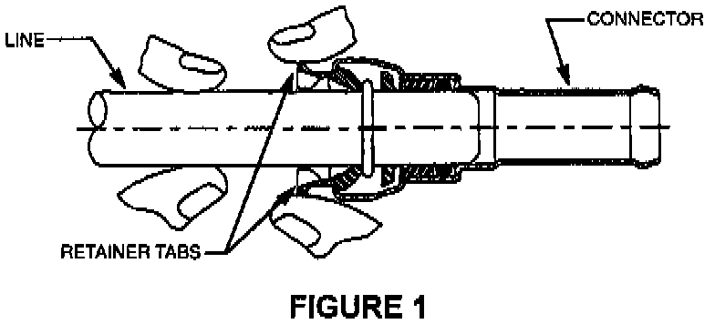
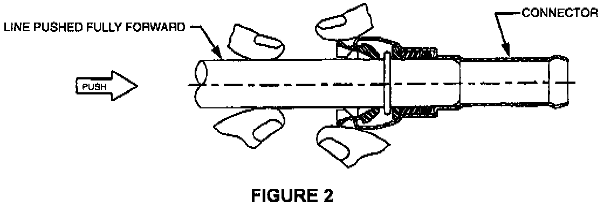
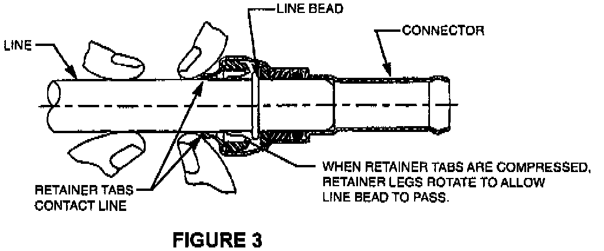
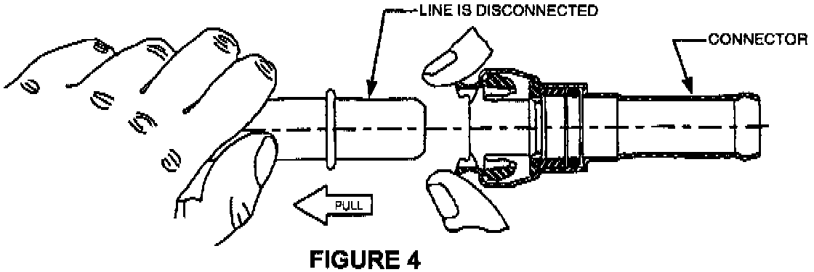

Hand Removal Procedure

1. Holding the line as shown, grasp connector body with fingers touching the retainer tabs (Figure 1).

2. Push line into connector until line stops (Figure 2).

3. Squeeze retainer tabs together until both tabs contact line (Figure 3).

4. Pull line out of the connector with other hand while retainer tabs are squeezed together (Figure 4).